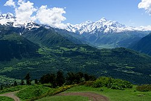

მდებარეობს დასავლეთ საქართველოს ჩრდილოეთ ნაწილში, კავკასიონის ქედის სამხრეთ კალთებზე. აღმოსავლეთით რაჭა ესაზღვრება, სამხრეთით — ლეჩხუმი და სამეგრელო, დასავლეთით — აფხაზეთი, ჩრდილოეთით — ყარაჩაი-ჩერქეზეთი და ყაბარდო-ბალყარეთი.

იყოფა ზემო (მდინარე ენგურის ზემოწელი) და ქვემო სვანეთად (ცხენისწყლის ზემოწელი). მათ ჰყოფს მაღალი სვანეთის ქედი ლატპარის ზეკარით (უღელტეხილით). ზემო სვანეთს შეადგენს მდინარე ენგურის ხეობა, ენგურის სათავიდან სამეგრელოს საზღვრამდე. ზემო სვანეთი ბალის ქედით იყოფოდა ორ ნაწილად. ბალს ქვემო სვანეთი დადეშქელიანების სამფლობელი იყო, ბალს ზემო სვანეთი კი თავისუფალ სვანეთად იწოდებოდა. სულ ზემო სვანეთში 13 თემი იყო
ისტორია
სვანეთის ტერიტორიაზე ადამიანის ცხოვრების კვალი ნეოლითის ხანიდან, ძვ. წ. VIII-VII ათასწლეულიდან ფიქსირდება. ნეოლითური სადგომებია აღმოჩენილი ზემო სვანეთში ლენჯერში და ქვემო სვანეთში ცხმელურში. ბრინჯაოს ხანაში, ძვ. წ. IV-I ათასწლეულებში სვანეთში გაჩნდა მჭიდრო დასახლება.
ქვემო სვანეთი
მეფის მთავრობამ სწრაფად და უმტკივნეულოდ მოაგვარა ქვემო სვანეთის შეერთება. მისი საკითხი ფაქტობრივად 1804 წელს სამეგრელოს სამთავროს შეერთებით გადაჭრა. გრიგოლ დადიანის მიერ რუსეთის ქვეშევრდომობაში შესვლაზე დადებულ „ხელშეკრულებაში“ არა მარტო სამეგრელოს, არამედ ქვემო სვანეთის შეერთებაზეც იყო საუბარი. უფრო მეტიც, დადიანის „სათხოვარ პუნქტებში“ ქვემო სვანეთის წიაღისეული სიმდიდრეც რუსეთის საკუთრებად იყო გამოცხადებული. რაკი ქვემო სვანეთის ნაწილი უშუალოდ დადიანის ხელში იყო, ჩოლურსა და ლაშხეთს დამოუკიდებელი არსებობის საშუალება ესპობოდათ და იძულებული იყვნენ რუსეთის ქვეშევრდომობაში შესულიყვნენ.